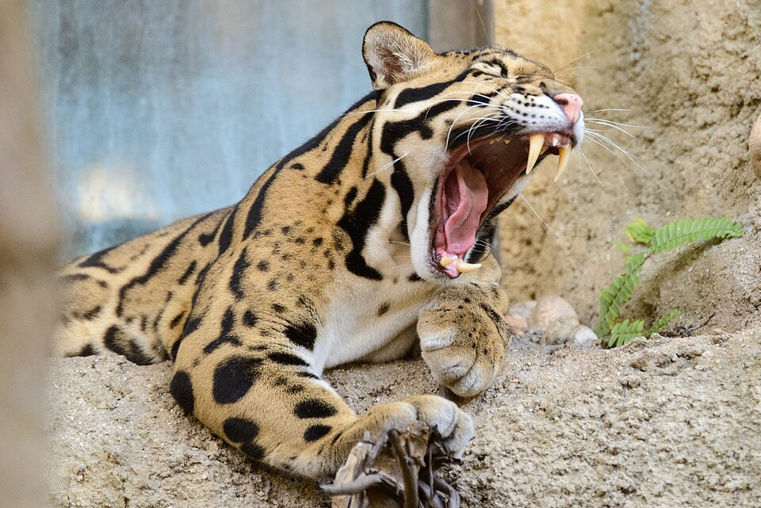

🌳 Forest Animals: Guardians of the Green
🐘 Living Links in the Forest Ecosystem
From elephants that carve paths through jungles to monkeys spreading seeds across treetops, forest animals are more than just inhabitants—they are the life force of our ecosystems.
Yet these living guardians are under siege. Illegal logging, land conversion, and hunting are rapidly shrinking the habitats of countless species, pushing once-common creatures toward extinction.
“To save forests, we must protect the species that protect them.”
🎯 Wildlife Monitoring: From Footprints to Fiber Optics
Conservationists are moving beyond binoculars and boots. With AI-powered sensors and satellite imaging, researchers can now track animal populations with stunning accuracy.

📸 Caught on cam: A family of clouded leopards in Malaysia
🧠 Forest Intelligence: Smart Collars & AI Mapping
Wildlife collars do more than track movement. They monitor health, behavior, and threats—alerting teams in real time. Combined with drone data and AI, forests are now protected intelligently.
🧑🤝🧑 Indigenous Knowledge Meets Innovation
Forest communities are vital. With training in mobile apps and sensors, their traditional tracking is now synced with global conservation databases.
From the Amazon to Borneo, these tech-equipped guardians are building the frontlines of biodiversity protection.
📊 Snapshot: Forest Animal Conservation Stats (2025)
| Animal Group | Endangered (%) | Conservation Focus |
|---|---|---|
| Large Mammals | 38% | Habitat protection |
| Forest Birds | 27% | Migration route tracking |
| Amphibians | 41% | Climate resilience studies |
| Pollinators | 52% | Nesting and biodiversity |
🌎 Saving Forest Animals = Saving Ourselves
Protecting forest animals is not just an environmental issue—it’s a human one. These species regulate air, water, and even soil. When they thrive, so do we.